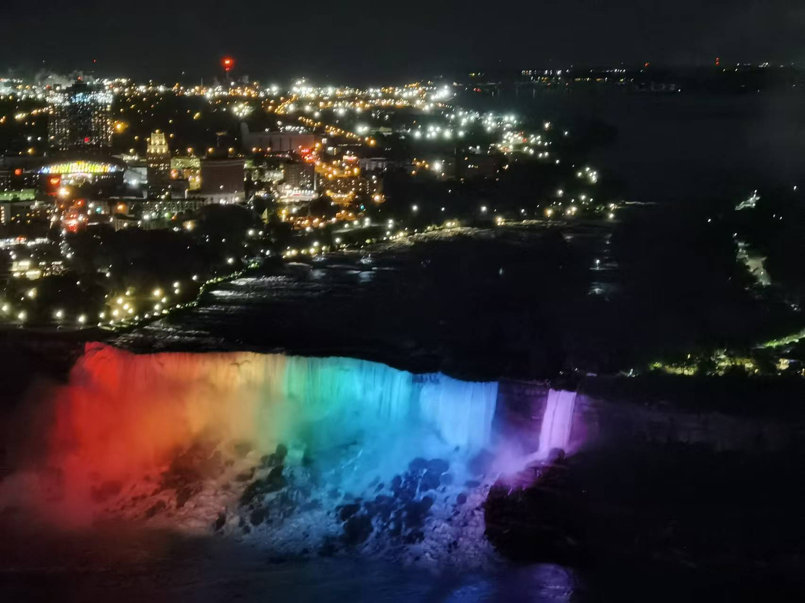
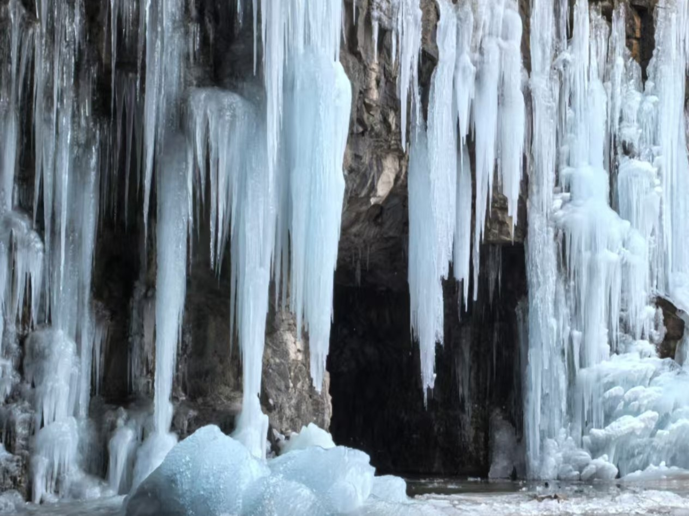

Miscellaneous
Basically, I am a person with strong self-awareness, curiosity and patience. Curiosity is not gonna kill me since I am not a cat.
My personal interests lie in reading, painting, video games, non-confrontational sports such as swimming, archery and hiking.
Personally, I am allergic to lobsters and aggressive winning-seekers. Therefore, I would rather compete with myself in the last state, just like a shadow race in the PopCart.
I'm a wide reader, into things like science fiction, history, geography, etc.
One of my favorite books is Zizhi Tongjian, which I knew from grandpa's bookshelf wall at the age around 7.
I have a mixed music gene too, ranging from City Pop, K-pop, R&B to Rock N Roll.
As an INTP (
When I speak English I switch to ENTP),
I am always enthusiastic in getting connected with people from all backgrounds, in the belief that there should be no barrier between races, gender or nationalities.
I was born in Anyang, a medium-sized city with its history longer than 3000 years and also where the Oracle bone scripts was discovered.
I respect the I Ching and its philosophical insights.
Staying in environments with imaginative, nonaggregsive people and interesting problems is my source of recharge and also my vision for life
--to hold a long-term mindset towards life and career, just as an elder of mine, a retired deputy mayor, told me.
"Staying longer with problems longer" prevents life from stagnation. Some of my exciting moments in my past life are below here:

Rainbow-like Niagara Falls, with a bunch of friends~
Disneyland firework show, with family
Live performance by Guns N' Roses (Unforggetable night)
Iris by Vincent van Gogh at Ottawa (Frida met it a second time at London!)

Sunrise at Xiamen, sneaked out with Siyi before 5 a.m.
Graduation with my most lasting girlfriend!
Cherry blossoms at Wuhan University (It was so crowded!)

Hiking to an ice stalactite cave, near hometown
Warning: penguin passing by! Hong Kong Marine Park